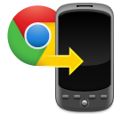

 Google Chrome to Phone Extension
Notice: Chrome to Phone is no longer supported
Chrome to Phone was launched in 2010 to help bridge your desktop and phone experience by making it easy to send Web links to your phone. Over the years, Google's core products have evolved to be more integrated across different form factors. As of today, Chrome to Phone is deprecated. The app will continue to work until Mar 31st 2016 after which it will no longer work.
Here are ways Chrome to Phone's most popular functionality can be achieved using Google today:
- Sending links to your phone. Sign into the Chrome Web browser on desktop and mobile and you can sync and view tabs across your devices.
- Send directions to your phone. Type send directions to my phone into Google on your laptop/desktop and simply enter the destination and choose your phone.
- Send text to your phone. Type send a note to my phone into Google on your laptop/desktop and simply enter the text and choose your phone.
See this help article to learn more about linking your phone to Google.